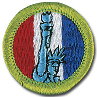

American Heritage - In-Person Class Notes
Please arrive with ample time prior to the start time of your class for registration. Remember, there will be others checking in as well that registration may take a little time, depending on the size of the class and the event held in conjunction with the class.
Your Scout uniform is required to be worn when attending this merit badge session. If you have any additional questions, please feel free to contact Brian Reiners (Scoutmater Bucky) via email at scoutmasterbucky@yahoo.com or on the phone at 612-483-0665.
Reviewing the merit badge pamphlet PRIOR to attending and doing preparation work will ensure that Scouts get the most out of these class opportunities. The merit badge pamphlet is a wealth of information that can make earning a merit badge a lot easier. It contains many of the answers and solutions needed or can at least provide direction as to where one can find the answers.
It is NOT acceptable to come unprepared to a Scoutmaster Bucky event. You can (and should) use the Scoutmaster Bucky American Heritage Merit Badge Workbook to help get a head start and organize your preparation work. Please note that the use of any workbook is merely for note taking and reference. Completion of any merit badge workbook does not warrant, guarantee, or confirm a Scout's completion of any merit badge requirements.
It should be noted that this merit badge class is not meant for those who just want to come and see what they can get done. It is possible to complete this merit badge by being properly prepared and having done the preparation work prior to the class. Preparation is a MUST! If you are not willing to participate to these expectations and standards, perhaps the Scoutmaster Bucky opportunity is not for you.
Things to remember to bring for this merit badge class:
- Merit badge blue card properly filled out and signed off by your Scoutmaster
- American Heritage Merit Badge Pamphlet
- Scout uniform
- Supporting documentation or project work pertinent to the American Heritage merit badge, which may also include a merit badge workbook for reference with notes
- A positive Scouting focus and attitude
Please read and understand the Scoutmaster Bucky Blue Card Process.
American Heritage - Online Class Notes
Please arrive with ample time prior to the start time of your class to ensure your connection to the online session is working properly. Ask people in your household to refrain from unnecessary internet usage, including but not limited to: streaming videos, online gaming, and other heavy bandwidth usage.
You will receive a link 12 to 24 hours before the class start time. Notification will come through the email address provided during the registration process, so please make sure you enter your email correctly.
Your Scout Uniform is required to be worn when attending this Online Merit Badge session. If you have any additional questions, please feel free to contact Brian Reiners; Scoutmaster Bucky via email at scoutmasterbucky@yahoo.com or on the phone at 612-483-0665.
Reviewing the Merit Badge Pamphlet PRIOR to attending and doing preparation work will insure that Scouts get the most out of these online class opportunities. The Merit Badge Pamphlet is a wealth of information that can make earning a Merit Badge a lot easier. It contains many of the answers and solutions needed or can at least provide direction as to where one can find the answers.
It is NOT acceptable to come unprepared to a Scoutmaster Bucky event. You can (and should) use the Scoutmaster Bucky American Business Merit Badge Workbook to help get a head start and organize your preparation work. Please note that the use of any workbook is merely for note taking and reference. Completion of any Merit Badge Workbook does not warrant, guarantee, or confirm a Scouts completion of any merit badge requirement(s). You can download the Scoutmaster Bucky American Heritage Merit Badge Workbook for taking notes to help you prepare.
It should be noted that this Merit Badge class is not meant for those who just want to come and see what they can get done. It is possible to complete this Merit Badge by being properly prepared and having done the preparation work prior to the class. Preparation is a MUST! If you are not willing to participate to these expectations and standards, perhaps the Scoutmaster Bucky opportunity is not for you.
American Heritage
Merit Badge
2020 Scouts BSA Requirements

Please make sure you read the top portion of this page for general participation expectations in a Scoutmaster Bucky merit badge class.
Pay careful attention to the action verbs within the requirements. An example to note:
"Tell", "explain", "describe", and "discuss" are commonly used and will require the Scout to perform these actions during the class. When these action verbs are a part of any requirement, Scouts are expected to be prepared to share. Reading responses is not acceptable since it does not fulfill the requirement of showing the Scout's knowledge and understanding.
1.
Read the Declaration of Independence. Pay close attention to the section that begins with "We hold these truths to be self-evident" and ends with "to provide new Guards for their future security." Rewrite that section in your own words, making it as easy to understand as possible. Then, share your writing with your merit badge counselor and discuss the importance of the Declaration to all Americans.
Scouts should come to the class with notes on their research and understanding of this requirement. The "discuss" action will be a part of group discussion led by the counselor in which each Scout will be given an opportunity to share their findings for this component of the requirement. Note that here is a portion of this requirement that requires Scouts to "write" and Scouts will be asked to share their rewrite with the counselor.
2.
Do TWO of the following:
(a)
Select two individuals from American history, one a political leader (a president, senator, etc.) and the other a private citizen (a writer, religious leader, etc.). Find out about each person's accomplishments and compare the contributions each has made to America's heritage.
(b)
With your counselor's approval, choose an organization that has promoted some type of positive change in American society. Find out why the organization believed this change was necessary and how it helped to accomplish the change. Discuss how this organization is related to events or situations from America's past.
(c)
With your counselor's approval, interview two veterans of the U.S. military. Find out what their experiences were like. Ask the veterans what they believe they accomplished.
(d)
With your counselor's approval, interview three people in your community of different ages and occupations. Ask these people what America means to them, what they think is special about this country, and what American traditions they feel are important to preserve.
Scouts choosing requirement component(s) 2b, 2c, and/or 2d, may work on these prior to the class, but please note that the counselor reserves the right to accept or deny your work on the basis of meeting the expectations of these requirement components to their satisfaction. Make sure your work is pertinent to the requirement components focus and be prepared to share your work.
Scouts not having done preparation work on this requirement will have an opportunity to review options with the counselor to pursue after the class.
3.
Do the following:
(a)
Select a topic related to the United States that is currently in the news. Describe to your counselor what is happening. Explain how today's events are related to or affected by the events and values of America's past.
(b)
For each of the following, describe its adoption, tell about any changes since its adoption, and explain how each one continues to influence Americans today: the flag, the Pledge of Allegiance, the Great Seal of the United States, the motto, and the national anthem.
(c)
Research your family's history. Find out how various events and situations in American history affected your family. If your family immigrated to America, tell the reasons why. Share what you find with your counselor.
Scouts will need to come to the class with these items already in the works, if not already completed. Time will be allotted in the class to review any of these components that Scouts have completed or are nearly completed with for consideration by the counselor for sign off. Some of the concepts required for these different components may be demonstrated and discussed for general knowledge purposes within the class, however ultimately it is the Scout's responsibility to fulfill the requirement completely before the Counselor can consider signing off on this requirement.
4.
Do TWO of the following:
(a)
Explain the National Register of Historic Places and how a property becomes eligible for listing in the National Register of Historic Places. Make a map of your local area, marking the points of historical interest. Tell about any National Register properties in your area. Share the map with your counselor, and describe the historical points you have indicated.
(b)
Research an event of historical importance that took place in or near your area. If possible, visit the place. Tell your counselor about the event and how it affected local history. Describe how the area looked then and what it now looks like.
(c)
Find out when, why, and how your town or neighborhood started, and what ethnic, national, or racial groups played a part. Find out how the area has changed over the past 50 years and try to explain why.
(d)
Take an active part in a program about an event or person in American history. Report to your counselor about the program, the part you took, and the subject.
(e)
Visit a historic trail or walk in your area. After your visit, share with your counselor what you have learned. Discuss the importance of this location and explain why you think it might qualify for National Register listing.
Scouts should choose their desired requirement components in this requirement to work on prior to the class and bring their completed work to the class ready to share for review. Bring proof of completion when possible (i.e. pictures, items, paperwork, etc.) to help strengthen your ability to show the counselor that you have successfully performed the actions required of your selected requirement components.
5.
Do ONE of the following:
(a)
Watch two motion pictures (with the approval and permission of your counselor and parent) that are set in some period of American history. Describe to your counselor how accurate each film is with regard to the historical events depicted and also with regard to the way the characters are portrayed.
(b)
Read a biography (with your counselor's approval) of someone who has made a contribution to America's heritage. Tell some things you admire about this individual and some things you do not admire. Explain why you think this person has made a positive or a negative contribution to America's heritage.
(c)
Listen to recordings of popular songs from various periods of American history. Share five of these songs with your counselor, and describe how each song reflects the way people felt about the period in which it was popular. If a recording is not available, have a copy of the lyrics available.
Scouts will need to carefully manage their time and resources when working on this requirement. This is not a requirement that can be done in an hour or two. Scouts should note that while the Counselor will review the selected requirement by each Scout during the class; ultimately it is up to each Scout to select and prepare one of the three items prior to the class. It cannot be emphasized enough that Scouts will need to have proof of their work to share during the class if they desire to be considered for sign off on this requirement at the class.
This requirement is best completed by Scouts who allot themselves plenty of time to complete and realize this is not just a single afternoon project. Time will be provided within the class for any Scouts interested in sharing their partial or completed progress on this requirement.
6.
Discuss with your counselor the career opportunities in American heritage. Pick one that interests you and explain how to prepare for this career. Discuss what education and training are required for this career.